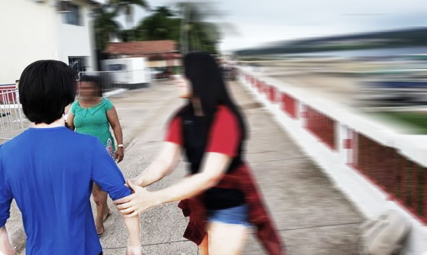

Corpo Celeste
Atenção! Nomes de pessoas e de lugares poderão ser alterados para a preservação e sigilo de determinadas informações.
Era final de 2019 e eu estava indo passar minhas férias em uma cidade no interior, havia acabado de chegar de Osternack na cidade de Nowhere, e não conhecia muita gente, mas acabei conhecendo uma guria que se tornaria uma das minhas melhores amigas, ela se chamava Naomi, isso foi um pouco antes da pandemia do COVID-19.
Ela era agitada, imprudente, extrovertida, emotiva, psicótica e meio idiota, tudo aquilo que, pelo menos em tese, eu não era... mas ela era minha melhor amiga, registraram uma foto nosso que descreve tudo isso que acabei de comentar, e ela concordou (com exceção do adjetivo "idiota").
Após o anúncio da pandemia, vivemos muita coisa, ela ficou trancada em casa, não podia sair, e ainda estava sem celular, então a gente conversava por cartas. Com as ruas desertas, falta de energia constante, e o medo do desconhecido somado com ansiedade, parecia que estávamos vivendo o fim do mundo no século XVIII,